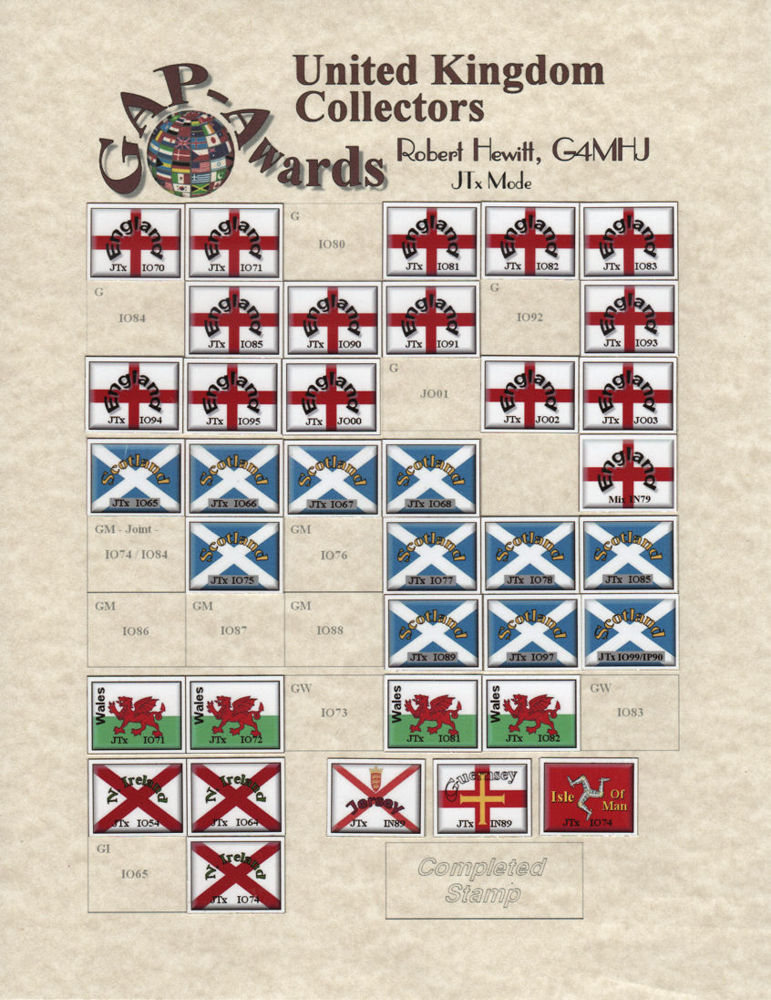

| GAP Awards Paper Certificates Family Tree |
| Index | Grid Index |
| This
collectors sheet for the United Kingdom Stamps
|
|  |
| This collectors sheet is shown
complete enough to claim the DUK PINNACLE certificate. All you need is One (1) of each 1xG, 1xGM 1xGW and 1xGI confirmed to claim this UK Collectors sheet. When you confirm 12xG, 5xGM, 3xGW, 3xGI and one each of GU, GJ or GD, you can claim the coveted DUK PINNACLE award. The DUK PINNACLE award has space to collect all 20 of the British Overseas Territories (BOT) some of which are really difficult. These PINNACLE awards are numbered. These awards are offered in different modes each being shown on the endorsement BAR or stamp. The achievement recognition will be posted in the OLAR table relevant mode . |
| Index | Grid Index |